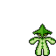
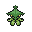

Pokédex / #332

Cacturne #332
GrassDark
It becomes active at night, seeking prey that is exhausted from the day's desert heat.
Generation 3 · Hoenn

Stats
| Attack | 115 | |
|---|---|---|
| Defense | 60 | |
| Sp. Atk | 115 | |
| Sp. Def | 60 |
In the wild
| Wild level | 40–50 |
|---|---|
| HP | 70 |
| Experience | 10 |
| Egg groups | Grass, Human-Like |
Evolution
- Evolves from Cacnea at level 30.
Moves
| Level | Move | Type | Category | Power | Energy | Cooldown | Effect | |
|---|---|---|---|---|---|---|---|---|
| 1 | Tackle | Normal | Physical | 15 | 15 | 1s | Tackle is one of the most common and basic moves a Pokemon learns. It deals damage with no additional effects. | |
| 5 | Absorb | Grass | Special | 20 | 35 | 5s | Absorb deals damage and the user will recover 50% of the HP drained. | |
| 10 | Poison Sting | Poison | Physical | 15 | 20 | 5s | Poison Sting inflicts damage and has a 30% chance of poisoning the target. | |
| 15 | Poison Jab | Poison | Physical | 80 | 80 | 12s | Poison Jab inflicts damage and has a 30% chance of poisoning the target. | |
| 20 | Needle Arm | Grass | Physical | 60 | 60 | 13s | Needle Arm inflicts damage and has a 30% chance of causing the target to flinch. | |
| 25 | Ingrain | Grass | Status | – | 100 | 120s | The user lays roots that restore its HP on every turn. | |
| 35 | Energy Ball | Grass | Special | 90 | 95 | 15s | Energy Ball deals damage and has a 10% chance of lowering the target's Special Defense by one stage. | |
| 40 | Faint Attack | Dark | Physical | 60 | 60 | 9s | Faint Attack deals damage and ignores changes to the Accuracy and Evasion stats. | |
| 45 | Sucker Punch | Dark | Physical | 80 | 80 | 12s | Sucker Punch deals damage and has no secondary effect. | |
| 50 | Spiky Shield | Grass | Status | – | 100 | 60s | Spiky Shield protects the user from all effects of moves that target the user during the turn it is used, including damage. | |
| 55 | Dark Pulse | Dark | Special | 8 | 95 | 18s | Dark Pulse deals damage and has a 20% chance of causing the target to flinch. | |
| 60 | Solar Beam | Grass | Special | 120 | 125 | 27s | Solar Beam deals damage but the user can't attack on the next turn. | |
| 65 | Revenge | Fighting | Physical | 120 | 120 | 18s | Revenge charge during 5 turns and then deals damage. |
Field abilities
FlashCutStrength
Special abilities
Sand Veil
Egg moves
AcidBelchBlockCounterDisableDynamic PunchFell StingerGrass WhistleLow KickMagical LeafNasty PlotSeed BombSmelling SaltsWorry Seed
Technical machines
BideBrick BreakBullet SeedCurseDouble EdgeDouble TeamDrain PunchEnergy BallFocus PunchGiga DrainHyper BeamMimicPoison JabProtectRageRestSandstormSnoreSolar BeamSubstituteSwords DanceToxic
Drops
| Item | Amount | Chance | |
|---|---|---|---|
| seed | 1–4 | 68.6% | |
| bamboo leaves | 1 | 41.2% | |
| frostbite herb | 1 | 41.2% | |
| leaf pendant | 1 | 20.6% | |
| black orb | 1 | 20.6% | |
| leaf | 1 | 11.4% | |
| cure herb | 1 | 10.3% | |
| thorn seed | 1 | 10.3% | |
| bunch of ripe rice | 1 | 8.23% | |
| sharp razor | 1 | 8.23% | |
| gracidea | 1 | 7.62% | |
| revival herb | 1 | 7.62% | |
| tropical leaf | 1 | 6.86% | |
| night orb | 1 | 6.86% | |
| onigiri | 1–5 | 5% | |
| forbidden fruit | 1 | 4.12% | |
| astral source | 1 | 2.06% | |
| lion's mane flower | 1 | 1.03% | |
 | cacturne doll | 1 | 0.1% |
| Meadow Plate | 1 | 0.05% | |
| Dread Plate | 1 | 0.05% | |
| held miracle seed | 1 | 0.02% | |
| held black glasses | 1 | 0.02% |